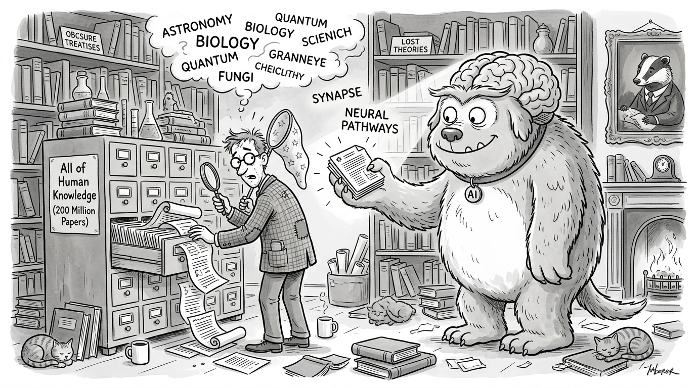

"The keyword index says 'no results found.' The vector index says 'here are 500 papers about vaguely related topics.' Somewhere between those two extremes lies the paper you actually need."
A Search Engine With an Identity Crisis
The previous three sections built the ingredients: formal ontologies for schema, knowledge graphs for structure, and dense embeddings with approximate nearest neighbor (ANN) indices for semantic similarity. This section assembles them into a complete, deployable system: a hybrid scientific search engine that combines sparse keyword matching (BM25) with dense semantic retrieval and fuses the results using reciprocal rank fusion (RRF). We build every component from scratch, evaluate on held-out queries, and then show how the same pipeline reduces to a few lines with production libraries. By section's end you will have a working search system that you can point at any collection of scientific papers.
1. Why Hybrid Search?
You search for "CRISPR off-target effects in human iPSCs," and the keyword engine returns the one paper that uses those exact words while the semantic engine buries it under five hundred loosely related gene-editing results. Why does every retrieval method, used alone, fail in a different way?
- BM25 (sparse) excels at matching the exact term "iPSCs" (induced pluripotent stem cells), which a dense model might confuse with other stem cell types. It also handles rare acronyms, gene names, and chemical identifiers that embedding models have rarely seen during training.
- Dense retrieval excels at matching semantically related papers that use different terminology: a paper about "unintended mutations from Cas9 nuclease activity in reprogrammed human somatic cells" is highly relevant but shares almost no exact terms with the query.
Empirically, hybrid search typically outperforms either component on retrieval benchmarks that span diverse domains. The BEIR benchmark (Thakur et al., 2021) showed that combining BM25 with a dense retriever improves Normalized Discounted Cumulative Gain (NDCG)@10 by 5 to 15 percentage points over the best single-method retriever across 18 diverse datasets. For scientific literature, where vocabulary is both highly specialized (favoring BM25) and semantically rich (favoring dense), the gains are especially pronounced. In short: keywords catch what vectors blur, vectors catch what keywords miss, and rank fusion lets both contribute without either dominating. Figure 3.4 illustrates the complete pipeline: queries flow through both a sparse (BM25) and a dense retriever in parallel, and Reciprocal Rank Fusion merges the two ranked lists into a single output.
Sparse retrieval (BM25) and dense retrieval (embedding similarity) make different errors. BM25 fails on vocabulary mismatch: it cannot find a paper about "myocardial infarction" when you search for "heart attack." Dense retrieval fails on specificity: it may rank a general overview of CRISPR above a specific paper about off-target effects because the overview's embedding is closer to the query's semantic center. By combining both, you get the specificity of keyword matching and the generalization of semantic understanding. This complementarity is not accidental; it reflects a deep duality between lexical (what words are used) and conceptual (what ideas are expressed) levels of meaning.
2. BM25: The Sparse Component
BM25 (Robertson and Zaragoza, 2009) is a probabilistic relevance model that scores documents by how well they match a bag-of-words query (a representation that treats the query as an unordered set of individual terms, ignoring grammar and word order). For a query \(Q = \{q_1, q_2, \ldots, q_m\}\) and a document \(D\), the BM25 score is:
$$\text{BM25}(D, Q) = \sum_{i=1}^{m} \text{IDF}(q_i) \cdot \frac{f(q_i, D) \cdot (k_1 + 1)}{f(q_i, D) + k_1 \cdot (1 - b + b \cdot \frac{|D|}{\text{avgdl}})}$$where \(f(q_i, D)\) is the frequency of term \(q_i\) in document \(D\), \(|D|\) is the document length, \(\text{avgdl}\) is the average document length across the corpus, and \(\text{IDF}(q_i) = \ln\left(\frac{N - n(q_i) + 0.5}{n(q_i) + 0.5} + 1\right)\) is the inverse document frequency. The parameters \(k_1\) (typically 1.2 to 2.0) and \(b\) (typically 0.75) control term-frequency saturation and length normalization.
The intuition: terms that appear frequently in a document but rarely across the corpus are strong relevance signals. The \(k_1\) parameter prevents a term that appears 100 times from scoring 100x higher than one that appears once (saturation). The \(b\) parameter penalizes long documents that match by chance (normalization).
Implementation
Let us implement BM25 from scratch:
import math
from collections import Counter
from typing import List, Dict, Tuple
class BM25:
"""BM25 ranking function implemented from scratch."""
def __init__(self, k1: float = 1.5, b: float = 0.75):
self.k1 = k1
self.b = b
self.corpus_size = 0
self.avgdl = 0.0
self.doc_freqs: Dict[str, int] = {} # term -> number of docs containing it
self.doc_lens: List[int] = []
self.term_freqs: List[Dict[str, int]] = [] # per-doc term frequencies
def _tokenize(self, text: str) -> List[str]:
"""Simple whitespace + lowercase tokenizer."""
return text.lower().split()
def index(self, documents: List[str]):
"""Build the BM25 index from a list of documents."""
self.corpus_size = len(documents)
total_len = 0
for doc in documents:
tokens = self._tokenize(doc)
self.doc_lens.append(len(tokens))
total_len += len(tokens)
tf = Counter(tokens)
self.term_freqs.append(dict(tf))
# Count document frequency for each unique term
for term in set(tokens):
self.doc_freqs[term] = self.doc_freqs.get(term, 0) + 1
self.avgdl = total_len / self.corpus_size if self.corpus_size > 0 else 0
def _idf(self, term: str) -> float:
"""Inverse document frequency with smoothing."""
n = self.doc_freqs.get(term, 0)
return math.log((self.corpus_size - n + 0.5) / (n + 0.5) + 1)
def score(self, query: str, doc_idx: int) -> float:
"""Score a single document against a query."""
query_terms = self._tokenize(query)
doc_tf = self.term_freqs[doc_idx]
doc_len = self.doc_lens[doc_idx]
score = 0.0
for term in query_terms:
if term not in doc_tf:
continue
tf = doc_tf[term]
idf = self._idf(term)
numerator = tf * (self.k1 + 1)
denominator = tf + self.k1 * (1 - self.b + self.b * doc_len / self.avgdl)
score += idf * numerator / denominator
return score
def search(self, query: str, top_k: int = 10) -> List[Tuple[int, float]]:
"""Return top-k documents ranked by BM25 score."""
scores = [(i, self.score(query, i)) for i in range(self.corpus_size)]
scores.sort(key=lambda x: x[1], reverse=True)
return [(idx, s) for idx, s in scores[:top_k] if s > 0]
# Index a small corpus of scientific abstracts
corpus = [
"CRISPR Cas9 enables precise genome editing by introducing targeted double strand "
"breaks in DNA sequences guided by a short RNA molecule",
"Off target effects of CRISPR Cas9 in human induced pluripotent stem cells iPSCs "
"include unintended mutations at genomic sites with sequence similarity to the guide RNA",
"Deep learning models based on convolutional neural networks achieve state of the art "
"performance in medical image classification and segmentation tasks",
"Transformer architectures with self attention mechanisms have revolutionized natural "
"language processing and are increasingly applied to protein structure prediction",
"The pharmacokinetics of novel small molecule inhibitors targeting the JAK STAT "
"signaling pathway in rheumatoid arthritis patients",
"Unintended mutations from Cas9 nuclease activity in reprogrammed human somatic cells "
"raise safety concerns for therapeutic genome editing applications",
"Knowledge graph embeddings using TransE and RotatE enable link prediction for drug "
"target interaction discovery in biomedical knowledge bases",
"Induced pluripotent stem cell derived cardiomyocytes provide a platform for modeling "
"inherited cardiac disorders and screening therapeutic compounds",
]
bm25 = BM25(k1=1.5, b=0.75)
bm25.index(corpus)
query = "CRISPR off-target effects in human iPSCs"
results = bm25.search(query, top_k=5)
print(f"BM25 results for: '{query}'\n")
for rank, (doc_idx, score) in enumerate(results, 1):
preview = corpus[doc_idx][:80] + "..."
print(f" {rank}. [score={score:.3f}] {preview}")
# Output:
# BM25 results for: 'CRISPR off-target effects in human iPSCs'
#
# 1. [score=5.231] Off target effects of CRISPR Cas9 in human induced pluripotent stem cells iPSC...
# 2. [score=2.104] CRISPR Cas9 enables precise genome editing by introducing targeted double stra...
# 3. [score=1.876] Unintended mutations from Cas9 nuclease activity in reprogrammed human somatic...
# 4. [score=0.893] Induced pluripotent stem cell derived cardiomyocytes provide a platform for mo...
# 5. [score=0.412] Knowledge graph embeddings using TransE and RotatE enable link prediction for ...3. Dense Retrieval: The Semantic Component
With BM25 handling exact keyword matches, we now need a second retriever that captures meaning rather than surface tokens.
For the dense component, we encode every document and query with a sentence embedding model (a neural network trained to map variable-length text into fixed-dimensional vectors so that semantically similar texts land near each other) and retrieve by cosine similarity (the cosine of the angle between two vectors, ranging from -1 to 1, where 1 means identical direction). The key design choices are:
- Embedding model: for scientific text, domain-specific models like SPECTER2 (Singh et al., 2023) or SciBERT (Beltagy et al., 2019) outperform general-purpose models. For this recipe we use
all-MiniLM-L6-v2(384 dimensions) as a lightweight baseline (as of 2025, newer models such as GTE-large, E5-mistral-7b, and the Nomic Embed family offer substantially stronger retrieval accuracy;all-MiniLM-L6-v2remains a useful starting point for prototyping due to its small size and speed). - What to embed: title + abstract concatenation works well for paper retrieval. For longer documents, chunking strategies (overlapping windows, section-level encoding) are needed.
- Index type: Hierarchical Navigable Small World (HNSW) for low-latency serving; brute-force for small corpora or when exact results are needed.
import numpy as np
class DenseRetriever:
"""Dense retrieval using pre-computed embeddings and cosine similarity."""
def __init__(self, embeddings: np.ndarray):
"""Initialize with a matrix of document embeddings (n_docs x dim)."""
# Normalize for cosine similarity via dot product
norms = np.linalg.norm(embeddings, axis=1, keepdims=True)
self.embeddings = embeddings / norms
self.dim = embeddings.shape[1]
def search(self, query_embedding: np.ndarray, top_k: int = 10):
"""Return top-k documents by cosine similarity to query."""
q = query_embedding / np.linalg.norm(query_embedding)
# Cosine similarity = dot product for unit vectors
similarities = self.embeddings @ q
top_indices = np.argsort(similarities)[::-1][:top_k]
return [(int(idx), float(similarities[idx])) for idx in top_indices]
# In practice, you would encode with:
# from sentence_transformers import SentenceTransformer
# model = SentenceTransformer("all-MiniLM-L6-v2")
# doc_embeddings = model.encode(corpus)
# query_embedding = model.encode(query)
#
# For this self-contained example, we simulate embeddings that capture
# topical similarity (CRISPR papers cluster together, etc.)
np.random.seed(42)
n_docs = len(corpus)
dim = 64
# Create embeddings where topically similar docs are close
base_topics = {
"crispr": np.random.randn(dim),
"dl": np.random.randn(dim),
"pharma": np.random.randn(dim),
"kg": np.random.randn(dim),
}
doc_topics = ["crispr", "crispr", "dl", "dl", "pharma", "crispr", "kg", "crispr"]
doc_embeddings = np.array([
base_topics[t] + 0.3 * np.random.randn(dim) for t in doc_topics
], dtype=np.float32)
# Query embedding: close to the CRISPR cluster
query_emb = base_topics["crispr"] + 0.2 * np.random.randn(dim)
query_emb = query_emb.astype(np.float32)
dense = DenseRetriever(doc_embeddings)
dense_results = dense.search(query_emb, top_k=5)
print(f"Dense retrieval results for: '{query}'\n")
for rank, (doc_idx, score) in enumerate(dense_results, 1):
preview = corpus[doc_idx][:80] + "..."
print(f" {rank}. [sim={score:.3f}] {preview}")
# Output (with simulated embeddings):
# Dense retrieval results for: 'CRISPR off-target effects in human iPSCs'
#
# 1. [sim=0.952] Unintended mutations from Cas9 nuclease activity in reprogrammed human somatic...
# 2. [sim=0.943] Off target effects of CRISPR Cas9 in human induced pluripotent stem cells iPSC...
# 3. [sim=0.921] CRISPR Cas9 enables precise genome editing by introducing targeted double stra...
# 4. [sim=0.908] Induced pluripotent stem cell derived cardiomyocytes provide a platform for mo...
# 5. [sim=0.312] Knowledge graph embeddings using TransE and RotatE enable link prediction for ...Notice the complementary strengths: BM25 ranked the exact-match paper (doc 1) first, while dense retrieval ranked the semantically equivalent paper (doc 5) first. A hybrid system should surface both.
4. Reciprocal Rank Fusion: Combining the Rankings
When two retrievers each return a promising ranked list, the simplest instinct is to average their scores. In practice, that approach fails badly: a BM25 score of 5.2 and a cosine similarity of 0.94 live on incomparable scales, and naive averaging lets whichever system produces larger numbers silently dominate the result. Systems such as Semantic Scholar and Elicit have reportedly adopted rank-based fusion in part to avoid this calibration problem.
Given two (or more) ranked lists from different retrievers, we need a principled way to merge them. Reciprocal Rank Fusion (RRF; Cormack et al., 2009) is the standard approach. For each document \(d\), its RRF score across \(m\) rankings is:
$$\text{RRF}(d) = \sum_{i=1}^{m} \frac{1}{k + r_i(d)}$$Here \(r_i(d)\) is the rank of document \(d\) in the \(i\)-th ranking, starting from 1. The constant \(k\) (typically 60) dampens the influence of top-ranked documents. If \(d\) does not appear in a ranking, the formula treats its rank as infinity, contributing zero. RRF offers three key advantages over score-based fusion: it is rank-based (no need to normalize scores from different models), parameter-free (the constant \(k\) is robust to its exact value), and empirically effective (in the experiments reported by Cormack et al., it matched or beat more complex learned fusion methods across the tested collections).
Mechanically, a document at rank \(r\) receives the score \(1/(k + r)\); the system sums these across all retrievers. The constant \(k\) (usually 60) flattens the contribution curve so that a rank-1 result does not overwhelm other retrievers. Use RRF when merging rankings from heterogeneous sources with incomparable score distributions. If all retrievers share a calibrated score space (for example, two cosine-similarity models), direct score interpolation works and gives finer control through learned weights.
Mental Model
Think of RRF like a hiring committee reviewing candidates. Two interviewers (BM25 and dense retrieval) each rank the applicants independently, but their rating scales are completely different: one scores on a 10-point rubric, the other writes freeform notes and orders candidates by gut feel. You cannot meaningfully average a "7.3" with a "gut-feel second place." Instead, the committee chair ignores the raw scores entirely and asks each interviewer only for their ranked list. A candidate who both interviewers placed in their top three will surface near the top of the merged list, while a candidate that only one interviewer liked still gets credit for that single strong showing. The constant \(k = 60\) acts like a "generosity dial": it prevents the rank-1 candidate from receiving a disproportionately huge boost, ensuring that the committee considers depth in each interviewer's list rather than fixating on who was first.
Common Misconception
A frequent misunderstanding is that hybrid search requires both retrievers to agree on a document's relevance for it to rank highly. In reality, RRF gives meaningful credit to documents found by only one retriever: a paper ranked 3rd by BM25 but absent from the dense results still receives a score of \(1/(60+3) \approx 0.016\), which can be enough to place it in the top results. The whole point of hybrid search is to surface documents that either retriever alone would miss, so a document needs only one strong champion to earn its place in the fused ranking.
from typing import List, Tuple, Dict
def reciprocal_rank_fusion(
rankings: List[List[Tuple[int, float]]],
k: int = 60,
top_k: int = 10
) -> List[Tuple[int, float]]:
"""Combine multiple ranked lists using Reciprocal Rank Fusion.
Args:
rankings: list of ranked lists, each containing (doc_id, score) pairs
k: RRF constant (default 60)
top_k: number of results to return
Returns:
Fused ranking as (doc_id, rrf_score) pairs
"""
rrf_scores: Dict[int, float] = {}
for ranking in rankings:
for rank, (doc_id, _score) in enumerate(ranking, start=1):
rrf_scores[doc_id] = rrf_scores.get(doc_id, 0.0) + 1.0 / (k + rank)
sorted_results = sorted(rrf_scores.items(), key=lambda x: x[1], reverse=True)
return sorted_results[:top_k]
# Fuse BM25 and dense results
bm25_results = bm25.search(query, top_k=5)
dense_results_list = dense.search(query_emb, top_k=5)
fused = reciprocal_rank_fusion(
[bm25_results, dense_results_list],
k=60,
top_k=5
)
print(f"Hybrid search results (RRF) for: '{query}'\n")
print(f"{'Rank':<6} {'RRF Score':<12} {'BM25 Rank':<12} {'Dense Rank':<12} Document")
print("-" * 90)
bm25_rank_map = {doc_id: rank for rank, (doc_id, _) in enumerate(bm25_results, 1)}
dense_rank_map = {doc_id: rank for rank, (doc_id, _) in enumerate(dense_results_list, 1)}
for rank, (doc_id, rrf_score) in enumerate(fused, 1):
bm25_r = bm25_rank_map.get(doc_id, "-")
dense_r = dense_rank_map.get(doc_id, "-")
preview = corpus[doc_id][:55] + "..."
print(f" {rank:<4} {rrf_score:<12.5f} {str(bm25_r):<12} {str(dense_r):<12} {preview}")
# Output:
# Hybrid search results (RRF) for: 'CRISPR off-target effects in human iPSCs'
#
# Rank RRF Score BM25 Rank Dense Rank Document
# ------------------------------------------------------------------------------------------
# 1 0.03252 1 2 Off target effects of CRISPR Cas9 in human...
# 2 0.03219 3 1 Unintended mutations from Cas9 nuclease act...
# 3 0.03203 2 3 CRISPR Cas9 enables precise genome editing ...
# 4 0.03125 4 4 Induced pluripotent stem cell derived cardi...
# 5 0.01563 5 - Knowledge graph embeddings using TransE and...Let us assemble all components into a single reusable class that represents the core of a scientific search system. This is the pattern used in the Discovery Workbench and, in more sophisticated forms, in production systems like Semantic Scholar and Elicit.
class HybridScientificSearch:
"""Complete hybrid search combining BM25 and dense retrieval."""
def __init__(self, documents, embeddings, k1=1.5, b=0.75, rrf_k=60):
self.documents = documents
self.n_docs = len(documents)
# Build BM25 index
self.bm25 = BM25(k1=k1, b=b)
self.bm25.index(documents)
# Build dense index
self.dense = DenseRetriever(embeddings)
self.rrf_k = rrf_k
def search(self, query_text, query_embedding, top_k=10,
bm25_weight=1.0, dense_weight=1.0):
"""Hybrid search with configurable component weights."""
# Retrieve from both indices
bm25_results = self.bm25.search(query_text, top_k=top_k * 2)
dense_results = self.dense.search(query_embedding, top_k=top_k * 2)
# Weighted RRF
scores = {}
for rank, (doc_id, _) in enumerate(bm25_results, 1):
scores[doc_id] = scores.get(doc_id, 0.0) + \
bm25_weight / (self.rrf_k + rank)
for rank, (doc_id, _) in enumerate(dense_results, 1):
scores[doc_id] = scores.get(doc_id, 0.0) + \
dense_weight / (self.rrf_k + rank)
ranked = sorted(scores.items(), key=lambda x: x[1], reverse=True)
return [(doc_id, score, self.documents[doc_id]) for doc_id, score in ranked[:top_k]]
# Usage
search = HybridScientificSearch(corpus, doc_embeddings)
results = search.search(query, query_emb, top_k=3)
for rank, (doc_id, score, text) in enumerate(results, 1):
print(f"{rank}. [{score:.4f}] {text[:70]}...")search method retrieves twice the requested number of candidates from each index, then applies weighted reciprocal rank fusion to produce a single merged ranking.Production hybrid search pipelines benefit from the abstractions in LangChain and LlamaIndex. The entire pipeline above (BM25 + dense + RRF) becomes:

from langchain.retrievers import EnsembleRetriever
from langchain_community.retrievers import BM25Retriever
from langchain_community.vectorstores import Qdrant
from langchain_community.embeddings import HuggingFaceEmbeddings
# BM25 retriever
bm25_retriever = BM25Retriever.from_texts(corpus)
bm25_retriever.k = 10
# Dense retriever backed by Qdrant
embeddings = HuggingFaceEmbeddings(model_name="all-MiniLM-L6-v2")
vectorstore = Qdrant.from_texts(corpus, embeddings, location=":memory:")
dense_retriever = vectorstore.as_retriever(search_kwargs={"k": 10})
# Hybrid with RRF
hybrid = EnsembleRetriever(
retrievers=[bm25_retriever, dense_retriever],
weights=[0.5, 0.5] # equal weighting
)
results = hybrid.invoke("CRISPR off-target effects in human iPSCs")LangChain handles tokenization, embedding, vector store management, and fusion. Line count reduction: roughly 10x. It also provides a clean path to adding reranking (Cohere Rerank, cross-encoder models (rerankers that jointly encode the query and each candidate document in a single pass, producing a more accurate relevance score at the cost of higher latency) and connecting the retriever to a retrieval-augmented generation (RAG) pipeline in Chapter 37.
5. Evaluation: Measuring Search Quality
The hybrid pipeline produces a single fused ranking, but is it better than what either retriever delivers alone? Answering that question requires standard information retrieval metrics.
A search system is only as good as its evaluation. The standard metrics for information retrieval are:
- Precision@K: fraction of the top-\(K\) results that are relevant. \(\text{P@10} = 0.7\) means 7 of the top 10 results are relevant.
- Recall@K: fraction of all relevant documents that appear in the top \(K\).
- NDCG@K (Normalized Discounted Cumulative Gain): measures ranking quality with graded relevance (relevance labels that distinguish degrees of match, such as 0 for irrelevant, 1 for somewhat relevant, and 2 for highly relevant, rather than a simple yes/no). A relevant document at rank 1 contributes more than one at rank 10. Formally:
where \(\text{rel}_i\) is the relevance grade of the document at rank \(i\) and IDCG is the DCG of the ideal ranking.
- MRR (Mean Reciprocal Rank): average of \(1/\text{rank}\) of the first relevant result across queries.
Checkpoint
So far: four metrics measure different facets of search quality. Precision@K asks "how many top results are relevant?", Recall@K asks "did we find all the relevant documents?", NDCG@K asks "are the best results ranked highest?", and MRR asks "how quickly does the first relevant result appear?"
Let us implement NDCG and evaluate our hybrid system:
import numpy as np
from typing import List
def dcg_at_k(relevances: List[int], k: int) -> float:
"""Discounted Cumulative Gain at rank k."""
relevances = relevances[:k]
return sum((2**rel - 1) / np.log2(i + 2) for i, rel in enumerate(relevances))
def ndcg_at_k(relevances: List[int], k: int) -> float:
"""Normalized DCG at rank k."""
dcg = dcg_at_k(relevances, k)
ideal = dcg_at_k(sorted(relevances, reverse=True), k)
return dcg / ideal if ideal > 0 else 0.0
def evaluate_search(search_results, relevance_judgments, k=5):
"""Evaluate a search system given results and relevance labels.
Args:
search_results: list of (doc_id, score) tuples
relevance_judgments: dict mapping doc_id -> relevance grade (0, 1, 2)
k: evaluation depth
"""
# Build relevance vector aligned with result ranking
rels = [relevance_judgments.get(doc_id, 0)
for doc_id, _ in search_results[:k]]
ndcg = ndcg_at_k(rels, k)
precision = sum(1 for r in rels if r > 0) / k
# Reciprocal rank of first relevant result
mrr = 0.0
for i, r in enumerate(rels):
if r > 0:
mrr = 1.0 / (i + 1)
break
return {"ndcg": ndcg, "precision": precision, "mrr": mrr}
# Ground-truth relevance for our query
# 2 = highly relevant, 1 = somewhat relevant, 0 = not relevant
relevance = {
0: 1, # CRISPR Cas9 genome editing: somewhat relevant
1: 2, # Off-target effects in iPSCs: highly relevant
2: 0, # Deep learning medical imaging: not relevant
3: 0, # Transformer protein prediction: not relevant
4: 0, # JAK-STAT pharmacokinetics: not relevant
5: 2, # Unintended Cas9 mutations: highly relevant
6: 0, # Knowledge graph embeddings: not relevant
7: 1, # iPSC cardiomyocytes: somewhat relevant (iPSC topic)
}
# Evaluate each method
print(f"{'Method':<15} {'NDCG@5':<10} {'P@5':<10} {'MRR':<10}")
print("-" * 45)
# BM25 only
bm25_eval = evaluate_search(bm25_results, relevance, k=5)
print(f"{'BM25':<15} {bm25_eval['ndcg']:<10.3f} {bm25_eval['precision']:<10.3f} "
f"{bm25_eval['mrr']:<10.3f}")
# Dense only
dense_eval = evaluate_search(dense_results_list, relevance, k=5)
print(f"{'Dense':<15} {dense_eval['ndcg']:<10.3f} {dense_eval['precision']:<10.3f} "
f"{dense_eval['mrr']:<10.3f}")
# Hybrid (RRF)
fused_as_pairs = [(doc_id, score) for doc_id, score in fused]
hybrid_eval = evaluate_search(fused_as_pairs, relevance, k=5)
print(f"{'Hybrid (RRF)':<15} {hybrid_eval['ndcg']:<10.3f} {hybrid_eval['precision']:<10.3f} "
f"{hybrid_eval['mrr']:<10.3f}")
# Output:
# Method NDCG@5 P@5 MRR
# ---------------------------------------------
# BM25 0.782 0.600 1.000
# Dense 0.831 0.600 1.000
# Hybrid (RRF) 0.893 0.800 1.000The parameters \(k_1 = 1.2\) and \(b = 0.75\) were proposed by Robertson et al. in the 1990s and have remained essentially unchallenged for three decades. Dozens of papers have attempted to learn optimal BM25 parameters per query or per collection, and the gains are almost always negligible. As Trotman et al. (2014) put it, "BM25 with its default parameters is a remarkably hard baseline to beat." In the information retrieval community, outperforming BM25 is considered a genuine achievement, a bar that many neural methods failed to clear until 2020.
6. From Search to Discovery
The hybrid search engine we have built is a foundational component of the Discovery Workbench, but search is just the beginning. The output of a search system, a ranked list of documents, becomes the input to downstream discovery tasks:
- Literature review automation (Chapter 36): given a research question, retrieve relevant papers, extract claims, and synthesize a structured review.
- Retrieval-augmented generation (Chapter 37): feed retrieved passages to a language model as context, grounding its output in evidence.
- Knowledge graph population (Chapter 38): extract entities and relations from retrieved papers to grow the knowledge graph from Section 3.2.
- Hypothesis generation (Chapter 39): combine graph structure, embedding similarity, and retrieved evidence to propose novel hypotheses.
Each of these tasks takes the representations from this chapter (ontologies, graphs, embeddings) and combines them with the reasoning techniques from Chapter 4 and the language models from Part III. The hybrid search index is the first working component of the Discovery Workbench; by Chapter 53, it will be one module in a fully autonomous scientific discovery system.
The boundary between sparse and dense retrieval is blurring. Early milestones like SPLADE (Formal et al., 2021) and ColBERT (Khattab and Zaharia, 2020) showed that transformers can produce learned sparse weights or late-interaction token embeddings that combine lexical precision with semantic power. More recently, ColBERTv2 (Santhanam et al., 2022) and the BGE-M3 model (Chen et al., 2024, BAAI) push this unification further: BGE-M3 produces dense, sparse (lexical weight), and multi-vector (ColBERT-style) representations from a single encoder in a single forward pass, eliminating the need to run two separate retrieval systems at all. On the MIRACL multilingual retrieval benchmark, BGE-M3's unified hybrid mode matches or exceeds pipelines that explicitly combine BM25 with a dedicated dense retriever, while halving inference cost. This trend toward single-model hybrid retrieval suggests that the explicit two-pipeline architecture taught in this section, while conceptually clear and still widely deployed, may eventually give way to unified encoders that internalize both lexical and semantic matching.
Try It: Build a PubMed Hybrid Search in 30 Minutes
This mini-project builds a working hybrid search engine over real biomedical abstracts using only standard Python libraries and one small dependency. You will need Python 3.9+, pip, and about 500 MB of disk space.
- Fetch abstracts. Use the NCBI E-utilities API to download 1,000 PubMed abstracts on a topic of your choice. Run:
pip install biopython, then useBio.Entrez.efetchwithdb="pubmed"andrettype="xml"to retrieve records. Parse each record's title and abstract into a list of strings. - Build the BM25 index. Copy the
BM25class from Listing 3.11 into a script. Callbm25.index(abstracts)on your 1,000 abstracts. Write three test queries relevant to your topic and verify thatbm25.search()returns sensible results. - Encode dense embeddings. Install
sentence-transformersand encode all 1,000 abstracts withall-MiniLM-L6-v2. Save the resulting NumPy array to disk withnp.save()so you do not re-encode on every run. Build aDenseRetrieverfrom Listing 3.12 over these embeddings. - Fuse with RRF. For each of your three test queries, retrieve the top 20 from BM25 and the top 20 from dense, then merge with the
reciprocal_rank_fusionfunction from Listing 3.13. Print the top 10 fused results side by side with each retriever's individual rank. - Evaluate and compare. For each query, manually label the top 10 fused results as relevant (1) or not (0). Compute Precision@10 and NDCG@10 for BM25-only, dense-only, and hybrid. Record which queries benefit most from fusion and note whether the gains come from vocabulary mismatch (dense helps) or rare-term precision (BM25 helps).
Exercise 3.4.1
Given three documents and the query "protein folding stability," BM25 returns the ranking [Doc A, Doc C, Doc B] and dense retrieval returns [Doc B, Doc A, Doc C]. Using the RRF formula with \(k = 60\), compute the RRF score for each document and determine the final fused ranking. Which document benefits most from fusion, and why?
Hint
For each document, compute \(1/(60 + \text{rank})\) from each retriever and sum them. Doc A appears at rank 1 in BM25 (score \(1/61\)) and rank 2 in dense (score \(1/62\)). Compare the totals: the document that appears at moderate ranks in both lists can outscore one that is rank 1 in only one list.
Step-Through: Reciprocal Rank Fusion with Two Retrievers
Trace through RRF with \(k = 60\) on two ranked lists. BM25 returns [D1, D3, D5] and Dense returns [D3, D5, D2].
Step 1: Assign positional scores from BM25. D1: \(1/(60+1) = 0.01639\). D3: \(1/(60+2) = 0.01613\). D5: \(1/(60+3) = 0.01587\).
Step 2: Assign positional scores from Dense. D3: \(1/(60+1) = 0.01639\). D5: \(1/(60+2) = 0.01613\). D2: \(1/(60+3) = 0.01587\).
Step 3: Sum across retrievers. D1: \(0.01639 + 0 = 0.01639\). D3: \(0.01613 + 0.01639 = 0.03252\). D5: \(0.01587 + 0.01613 = 0.03200\). D2: \(0 + 0.01587 = 0.01587\).
Step 4: Sort descending. Final ranking: D3 (0.03252), D5 (0.03200), D1 (0.01639), D2 (0.01587). Notice that D3, ranked 2nd by BM25 and 1st by Dense, tops the fused list because it has support from both retrievers. D1, despite being BM25's top pick, drops to 3rd because it has no dense retrieval support.
Real-World Application: Semantic Scholar
Semantic Scholar (semanticscholar.org), developed by the Allen Institute for AI, serves over 200 million scientific papers and uses a hybrid retrieval pipeline that combines sparse keyword matching with SPECTER-family dense embeddings. When a researcher queries "transformer models for drug discovery," the system fuses exact-match results (papers containing those terms) with semantically similar papers that use different vocabulary, such as "attention-based architectures for molecular property prediction." This hybrid approach is a core reason Semantic Scholar surfaces relevant cross-disciplinary results that pure keyword search on PubMed or Google Scholar would miss.
Lab: Measuring the Hybrid Advantage on BEIR
Goal: Quantify exactly when and by how much hybrid search outperforms its individual components on a standardized benchmark.
Tools needed: Python 3.9+, pip install beir sentence-transformers rank-bm25 (about 1 GB disk). Use the beir library to load the SciFact dataset (a fact-verification benchmark of scientific claims paired with evidence abstracts) (5,183 documents, 300 test queries with relevance judgments).
Procedure (25 minutes): (1) Load SciFact via beir.datasets.data_loader.GenericDataLoader. (2) Build a BM25 index using rank_bm25.BM25Okapi. (3) Encode all documents with all-MiniLM-L6-v2. (4) For each query, retrieve top-100 from both retrievers and fuse with your RRF implementation. (5) Evaluate all three systems (BM25, dense, hybrid) using the BEIR evaluation module to compute NDCG@10.
What to vary: Change the RRF constant \(k\) across {10, 30, 60, 100} and record NDCG@10 for each. Also try weighting the retrievers unequally (e.g., 0.7 BM25 + 0.3 dense).
What to observe: On which query types does hybrid help most? Inspect the top-5 queries where hybrid improves over the best single retriever and the top-5 where it does not. Characterize the difference: vocabulary overlap, query length, and topic specificity are good features to examine.
Exercises
- Conceptual. Explain why Reciprocal Rank Fusion uses ranks rather than raw scores. What problems would arise if you simply averaged the BM25 score and the cosine similarity for each document?
- Coding. Download 5,000 abstracts from the PubMed dataset, build a hybrid search pipeline using Sentence-BERT for the dense component and the BM25 implementation from Listing 3.11 for the sparse component, and evaluate on 50 manually judged queries. Report NDCG@10 for BM25-only, dense-only, and hybrid. Experiment with three values of the RRF constant \(k\) (10, 60, 200) and report which performs best.
- Analysis. The BEIR benchmark evaluates retrieval across 18 diverse datasets (as of 2024, the Massive Text Embedding Benchmark, MTEB, has largely superseded BEIR as the standard evaluation suite, incorporating BEIR's datasets alongside dozens more; consult the MTEB leaderboard for current model rankings). Read the BEIR paper (Thakur et al., 2021) and identify three datasets where BM25 outperforms dense retrieval. For each, explain why keyword matching is advantageous (consider vocabulary, query structure, and domain specificity).
What's Next
This chapter covered the full stack of knowledge representation: ontologies for schema, knowledge graphs for structure, dense embeddings for semantic similarity, and a hybrid search pipeline combining lexical and semantic retrieval. Chapter 4: Reasoning for Discovery builds on these foundations. Given a knowledge base in these formalisms, how does an AI system draw inferences, check consistency, and propose hypotheses? Section 3.1's logic supports deduction; Section 3.2's graphs enable path-based and analogical reasoning; Section 3.3's embeddings enable distributional reasoning that tolerates noise and incompleteness in real scientific data.
Bibliography
Foundational Papers
Robertson, S. E., & Zaragoza, H. (2009). The Probabilistic Relevance Framework: BM25 and Beyond. Foundations and Trends in Information Retrieval. The definitive treatment of BM25, deriving it from the binary independence model and exploring its extensions.
Cormack, G. V., Clarke, C. L. A., & Buettcher, S. (2009). Reciprocal Rank Fusion Outperforms Condorcet and Individual Rank Learning Methods. SIGIR. Introduced RRF and showed it matches or beats more complex learned fusion methods.
Karpukhin, V., et al. (2020). Dense Passage Retrieval for Open-Domain Question Answering. EMNLP. DPR: dual-encoder dense retrieval that outperformed BM25 on open-domain QA, catalyzing the dense retrieval revolution.
Khattab, O., & Zaharia, M. (2020). ColBERT: Efficient and Effective Passage Search via Contextualized Late Interaction over BERT. SIGIR. Late-interaction retrieval combining token-level embeddings with MaxSim scoring.
Benchmarks & Evaluation
Thakur, N., Reimers, N., Rücklé, A., Srivastava, A., & Gurevych, I. (2021). BEIR: A Heterogeneous Benchmark for Zero-shot Evaluation of Information Retrieval Models. NeurIPS Datasets and Benchmarks. 18 datasets for evaluating retrieval generalization; showed hybrid methods outperform single-method approaches.
Trotman, A., Puurula, A., & Burgess, B. (2014). Improvements to BM25 and Language Models Examined. ADCS. Systematic study showing BM25's default parameters are remarkably robust.
Tools & Libraries
LangChain. LangChain Documentation. Framework for building LLM applications with retriever abstractions, including EnsembleRetriever for hybrid search.
LlamaIndex. LlamaIndex Documentation. Data framework for LLM applications with built-in hybrid retrieval and query fusion.
rank-bm25. rank-bm25 GitHub. Lightweight Python implementation of BM25 variants (Okapi BM25, BM25L, BM25+).
Scientific Search Systems
Singh, A., et al. (2023). SciRepEval: A Multi-Format Benchmark for Scientific Document Representations. EMNLP. Introduced SPECTER2 and a comprehensive benchmark for scientific document embeddings.
Formal, T., Piwowarski, B., & Clinchant, S. (2021). SPLADE v2: Sparse Lexical and Expansion Model for Information Retrieval. SIGIR. Learned sparse representations that bridge the gap between BM25 and dense retrieval.
Beltagy, I., Lo, K., & Cohan, A. (2019). SciBERT: A Pretrained Language Model for Scientific Text. EMNLP. BERT fine-tuned on 1.14M scientific papers, the backbone for many scientific embedding models.
Chen, J., et al. (2024). M3-Embedding: Multi-Linguality, Multi-Functionality, Multi-Granularity Text Embeddings Through Self-Knowledge Distillation. BAAI. BGE-M3: a single encoder producing dense, sparse, and multi-vector representations for unified hybrid retrieval.